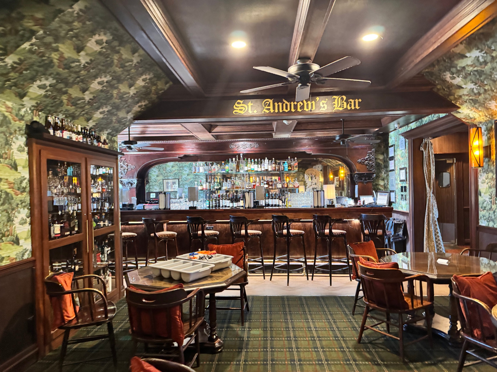
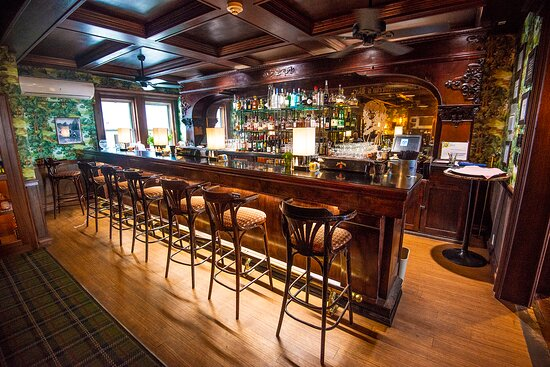
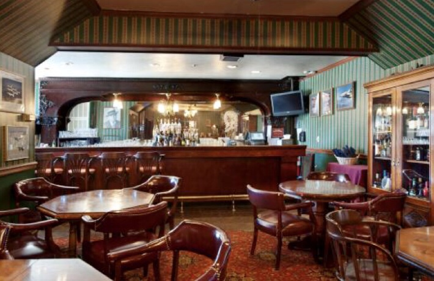

A Historic Hotel Lounge
St. Andrew’s Lounge is the bar inside 1899 at The Lodge at Cloudcroft. It’s a historic hotel lounge rather than a standalone nightlife venue — a place for cocktails, lighter food, and a slower pace tied to one of the village’s most iconic properties.
The official Lodge description positions it as the spot where “legends and golfers unwind,” with classic cocktails, elevated bar fare, and mountain views. It stands out in Cloudcroft because most other drinking options lean brewery, tasting room, or casual bar. St. Andrew’s offers the strongest classic Lodge atmosphere in town.
This is a better fit for pre-dinner drinks, post-golf drinks, or a slower evening stop than for loud nightlife. More polished than rowdy, more lounge than party scene — a place where people linger.
Highlights
Al Capone’s Historic Bar
The official Lodge site says guests can sip drinks at Al Capone’s historic bar. The history of the property is part of the draw — this is not just another counter.
Mountain Views
The lounge is positioned with mountain views as part of the experience. A slower drink stop where the setting itself adds value beyond what’s in the glass.
Connected to Eighteen99
The bar sits inside 1899, Cloudcroft’s fine-dining anchor. You can pair a drink at St. Andrew’s with dinner next door, or enjoy the Lodge atmosphere without a full reservation.
Inside St. Andrew’s



Visit St. Andrew’s
Everything you need to know before you go.
Location
601 Corona Place, Cloudcroft, NM 88317. Inside The Lodge at Cloudcroft — park at the Lodge and ask for St. Andrew’s Lounge or the lounge inside 1899.
Hours
Wednesday–Saturday, 12:00 PM–8:00 PM. Hours may vary by season. Call ahead on holidays or special event weekends.
Contact
Good to Know
Walk-ins appear standard — reservations are not emphasized for the lounge. This is a hotel bar, not a nightlife venue. Best for pre-dinner drinks, post-golf drinks, or a slower afternoon stop.
Cocktails at The Lodge
St. Andrew’s Lounge is where classic cocktails meet historic atmosphere inside Cloudcroft’s most iconic property. Elevated bar fare, mountain views, and Al Capone’s bar — no dinner reservation required.